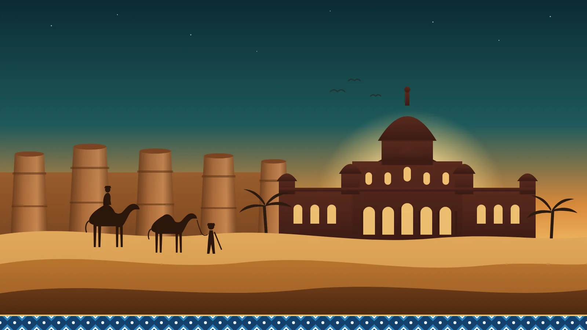

For more than two centuries, Bahawalpur was the capital of a princely state ruled by the Abbasi Nawabs. They left behind a city of white and red palaces, a desert fortress with forty towers and some of the most beautiful tiled tombs in South Asia. Today it is one of Pakistan's great hidden gems.
Video credit: this article was inspired by the reel “The Legacy of Nawab's” by travel creator Arbaz Wali (@nomad.arbaz on Instagram). The video and its footage belong to him; follow his account for more of Pakistan.
A short history of the City of Nawabs
Nawab Bahawal Khan founded the state of Bahawalpur in 1748, and his Abbasi descendants ruled it as Nawabs. It remained a princely state through British rule, joined Pakistan in 1947 and was merged into West Pakistan in 1955. Its rulers were great builders, and most of what visitors come to see dates from the late 19th and early 20th centuries, when the state was at its richest.
Noor Mahal
The most famous palace in Bahawalpur was built between 1872 and 1875 for Nawab Sadiq Muhammad Khan IV. Designed in the style of an Italian chateau, it mixes Corinthian columns and pediments with Islamic details, and has 32 rooms, five domes and a grand Durbar Hall with a vaulted ceiling and crystal chandeliers. A mosque was added in 1906.
Local legend says the palace was named after the Nawab's wife, Noor, who stayed only one night because she could see a graveyard from her balcony. Noor Mahal is a protected monument and is open to visitors; inside you can see royal portraits, furniture and items from the Nawabs' court.
The royal palaces
Bahawalpur has a whole family of palaces, several of them still used by the army or government:
- Darbar Mahal (around 1905): the seat of the court, where the Nawab heard petitions and held ceremonies
- Sadiq Garh Palace (1882–1891): a vast palace at Dera Nawab Sahib, south of the city
- Gulzar Mahal (1906–1909): a family residence in the Indo-Saracenic style
Access to some palaces is limited and photography rules vary, so it is worth going with a guide who checks what is open on the day.
Derawar Fort
Deep in the Cholistan Desert stands Derawar Fort, with 40 huge round bastions, ten on each side, rising up to 30 metres above the sand. Its origins go back to the 9th century; the Abbasi Nawabs took and rebuilt it in 1732. Beside it are the white marble Abbasi Mosque, built in 1849, and the ornate graveyard of the Nawabs and their families.
The fort is still private property of the former ruling family, so going inside needs permission. Even from outside, seeing camels pass beneath its walls at sunset is unforgettable. Every February, Derawar also hosts the famous Cholistan Desert Jeep Rally.
Uch Sharif
West of Bahawalpur, the old town of Uch Sharif is far older than the Nawabs’ state. It is famous for its shrines and tombs covered in blue and white glazed tiles, above all the octagonal tomb of Bibi Jawindi from the late 15th century, partly ruined by floods but still breathtaking. It is a place of pilgrimage, so dress modestly and remove your shoes at the shrines.
The old city
Between the palaces, Bahawalpur’s old city is full of life: tiled gateways, busy bazaars selling Cholistani crafts, embroidered khussa shoes and local sweets, and mosques with painted interiors. It is the best place to feel how people live in the City of Nawabs today.
Tips for visiting
- Best time: October to March. Summers in Bahawalpur are among the hottest in Pakistan.
- Getting there: Bahawalpur is on the main road and rail line between Lahore and Karachi, with an airport for domestic flights.
- Derawar and Cholistan: allow a full day and travel with a local driver who knows the desert roads.
- Combine it with: Multan, the City of Saints, and the ancient city of Harappa.
Visit Bahawalpur with Past Enlighten
We plan private trips to Bahawalpur, Derawar and the Cholistan Desert with an English-speaking guide, a private car and hotels arranged for you. See our Bahawalpur & Cholistan Desert tour and Lahore–Harappa–Multan tour, or message us on WhatsApp and we will plan it around your dates.
Video credit: “The Legacy of Nawab's” by Arbaz Wali (@nomad.arbaz on Instagram).
Explore with Past Enlighten
Ask about route options, dates and what is included. Confirm the price and itinerary in writing before you book.
Continue planning
Travel conditions, access, schedules and prices can change. Confirm current details locally before departure.